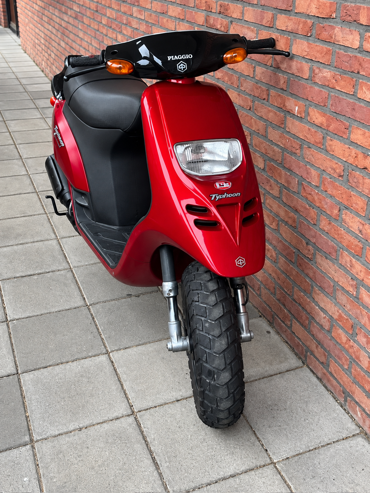

Piaggio Zip
Een van de meest verkochte scooters ooit. Licht, wendbaar en geliefd voor dagelijks gebruik in de stad.
Piaggio heeft door de jaren heen veel verschillende en iconische scooters op de markt gebracht. Hieronder vind je meer informatie over een aantal van de bekendste modellen.
Een van de meest verkochte scooters ooit. Licht, wendbaar en geliefd voor dagelijks gebruik in de stad.

Bekend om zijn krachtige motor en sportieve uiterlijk. In de jaren '90 erg populair als snelle scooter.

Robuust ontwerp met brede banden — uitermate geschikt voor allerlei soorten wegdek.